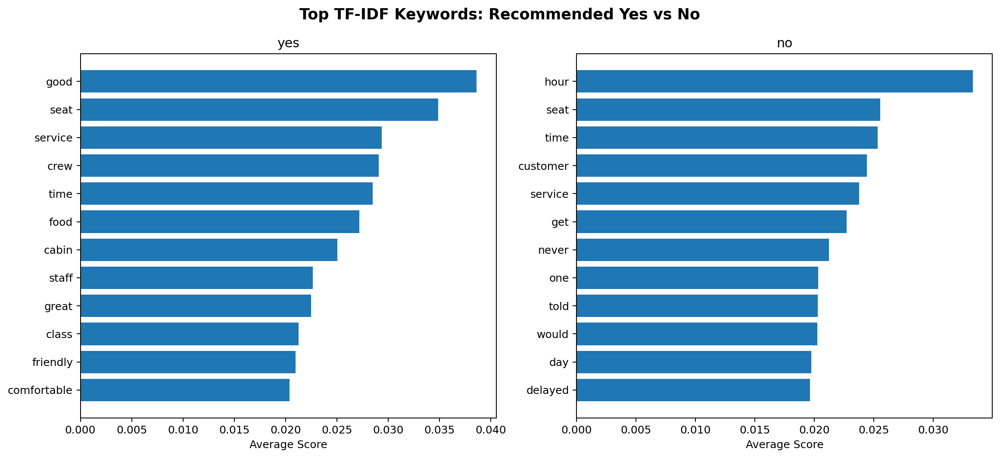
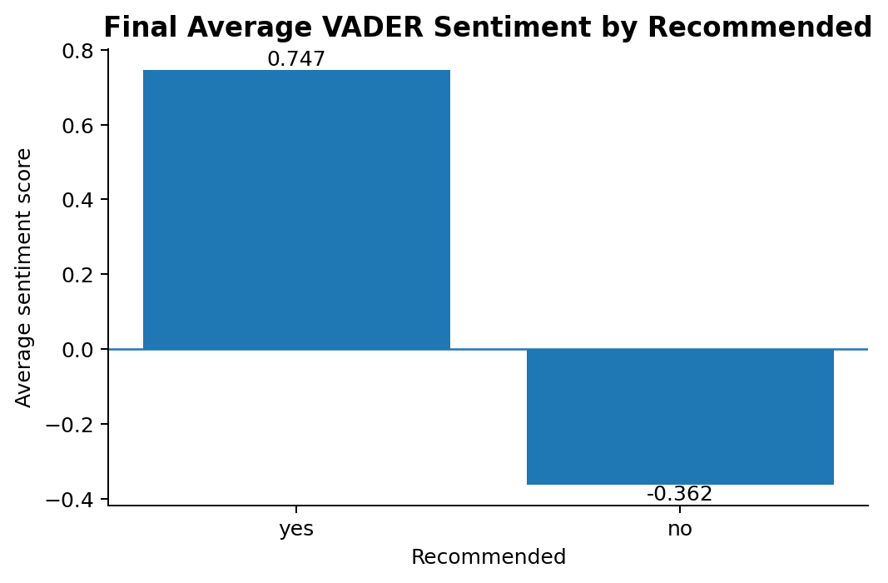
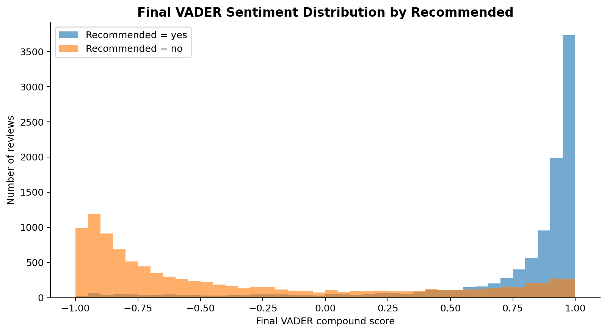
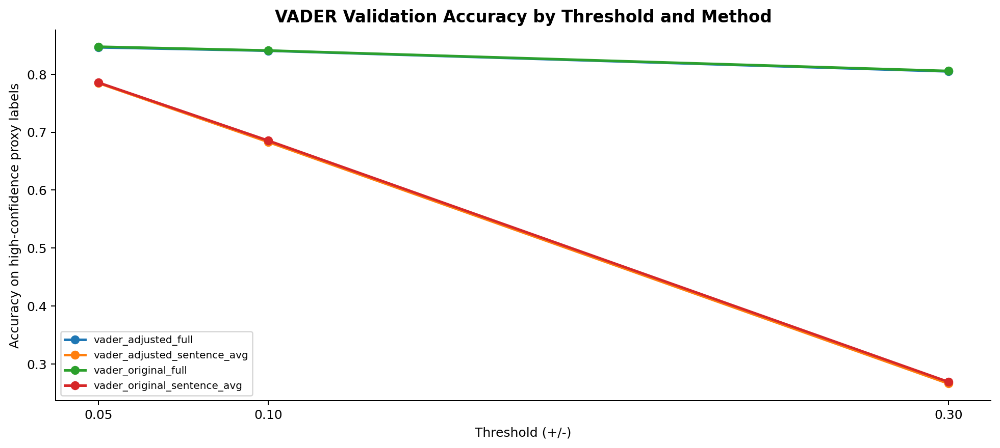
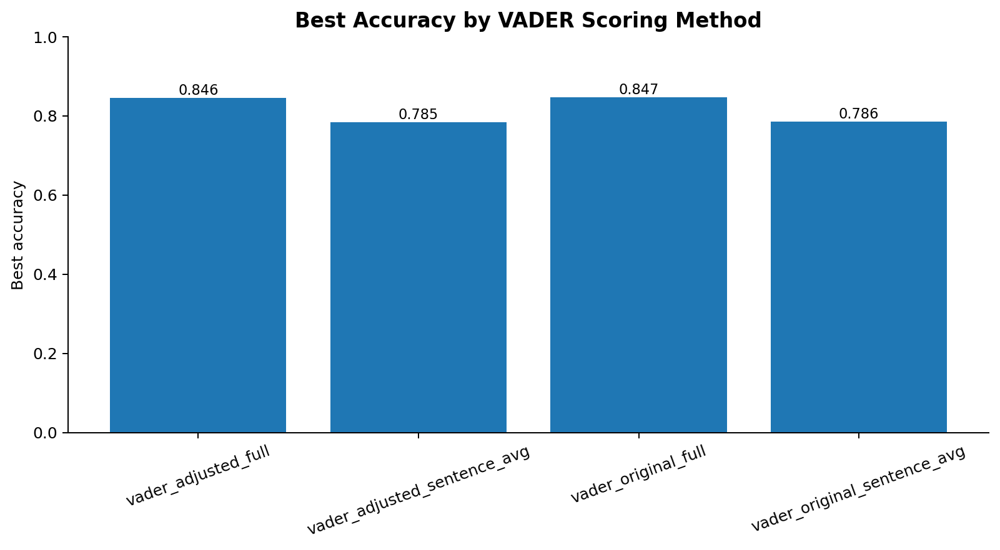
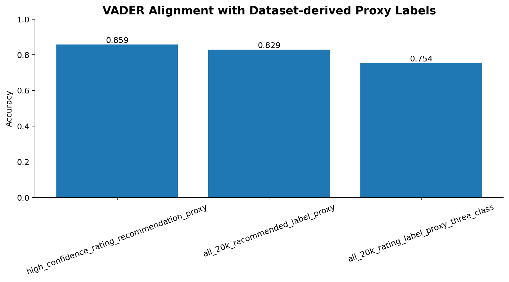
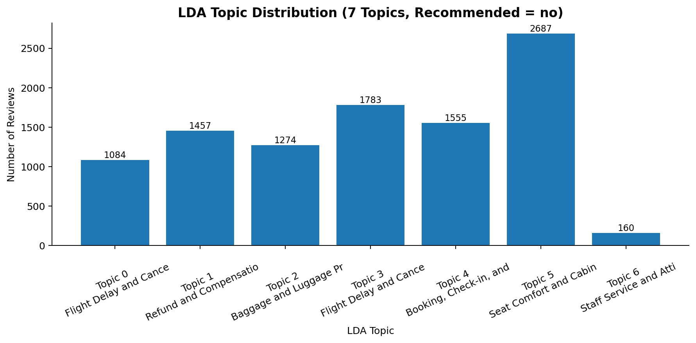
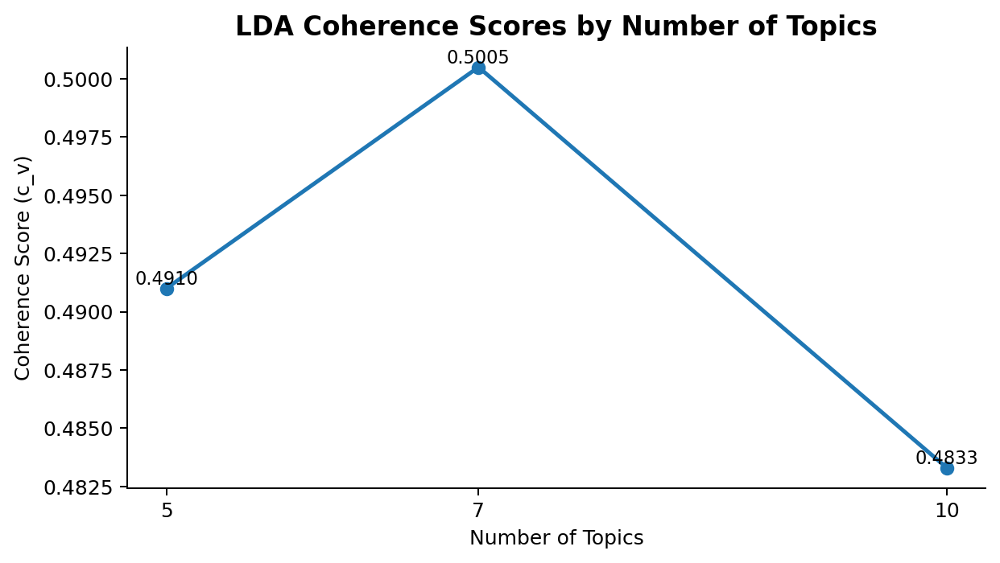

Member A：資料與前處理
負責資料清理、分層抽樣、tokens 欄位、token_count 與 EDA 圖表。
Airline Reviews Text Mining Final Project
Balanced Sampling Design
本專題將 Airline Reviews dataset 依照 Recommended 欄位縮減為平衡資料集：yes 10,000 筆、no 10,000 筆，共 20,000 筆。Member B 使用同一份 sampled_20k_with_tokens.csv 完成 TF/TF-IDF、VADER sentiment analysis 與 LDA baseline。
負責資料清理、分層抽樣、tokens 欄位、token_count 與 EDA 圖表。
負責 TF/TF-IDF、VADER 嚴謹驗證、航空詞彙調整比較、資料標籤佐證、LDA baseline 與代表性評論。
負責 BERTopic、LDA vs BERTopic 比較、dashboard / presentation 整合。
讀取 sampled_20k_with_tokens.csv
使用 review_cleaned 做 TF / TF-IDF
使用 Review 原文做 VADER，並驗證四種設定
使用 tokens 做 LDA topic modeling
整合圖表、CSV、代表性評論與人工解釋
經過完整 20,000 筆重新評分與 17,567 筆 high-confidence proxy validation 後，最佳設定為原生 VADER、整段 Review 輸入、預設門檻 ±0.05。航空詞彙調整與逐句平均都有被測試，但沒有比原生整段輸入更好。
TF / TF-IDF
TF-IDF 用於找出各群組較具代表性的詞，協助比較 Recommended = yes 與 Recommended = no 的語意差異。

通常偏向服務、舒適度、友善、良好經驗，例如 good、crew、friendly、comfortable、excellent。
通常偏向延誤、等待、客服、行李、票務與額外費用，例如 delayed、bag、ticket、customer service、worst、pay。
Final VADER Sentiment
最終設定採用原生 VADER、整段 Review 輸入、預設門檻 ±0.05。此頁呈現 Recommended yes/no 的最終情緒差異。


Recommended = yes 的平均情緒分數約為 0.747，Recommended = no 約為 -0.362，方向與推薦標籤與 OverallScore 一致。
VADER Method Validation
此頁比較原生 VADER / 航空詞彙調整 VADER，以及整段 Review / 逐句平均兩種輸入形式，並測試 ±0.05、±0.10、±0.30 三種門檻。


雖然逐句平均可以避免長評論正負情緒互相抵銷，但實際驗證結果顯示，整段 Review 的 accuracy 明顯較高。這代表在本資料集中，完整評論語境對 VADER 判斷更穩定。
航空詞彙調整後的 accuracy 沒有明顯提升，代表許多航空評論的情緒來自整體語境，不只是單一航空詞彙。因此最終保留原生 VADER 是有資料支持的選擇。
Dataset-derived Proxy Labels
除了 high-confidence proxy validation，本 dashboard 也加入資料集自帶標籤一致性檢查：Recommended-based label、Rating-based label，以及兩者共同建立的 high-confidence proxy。

Rating 1–4 且 Recommended = no 標為 negative；Rating 7–10 且 Recommended = yes 標為 positive。這是最嚴格、最主要的驗證依據。
直接用 Recommended = yes/no 對應 positive/negative，可檢查 VADER 與推薦行為的一致性。
OverallScore 7–10 為 positive、5–6 為 neutral、1–4 為 negative，可檢查 VADER 與數字評分的一致性。
High-confidence
Recommended
Rating 3-class
Aviation-domain Lexicon
本次 VADER 驗證引用三個航空情緒詞彙 CSV，並將適合旅客評論情境的詞彙加入 VADER lexicon，再比較調整前後效果。
航空領域負向詞彙，例如 delay、cancel、stranded、overbooked 相關語意。
航空領域正向詞彙，例如 friendly、comfortable、smooth、upgrade 相關語意。
整合版航空情緒詞彙表，包含 term、polarity、score、category、domain 等欄位。
航空詞彙調整是合理的驗證步驟，但結果顯示它沒有明顯提高 accuracy。因此本研究不是強行使用調整版，而是根據驗證結果保留原生 VADER。這也表示旅客評論的情緒常由完整句子與語境決定，而不只是由單一航空詞彙決定。
LDA Baseline
LDA 主要針對 Recommended = no 評論，找出 passenger complaints 的主題結構。


LDA 產生的是 topic-word distribution，不會自動理解主題名稱。因此本 dashboard 使用 output_2 的修正版：保留 topic_id、topic_size、top_words、representative reviews，不改模型結果，只根據 top words 與代表性評論提供更清楚的人工主題命名。
開啟 pyLDAvis 互動視覺化Representative Reviews
代表性評論用來驗證 topic label 是否合理，並提供報告中的質性解釋素材。